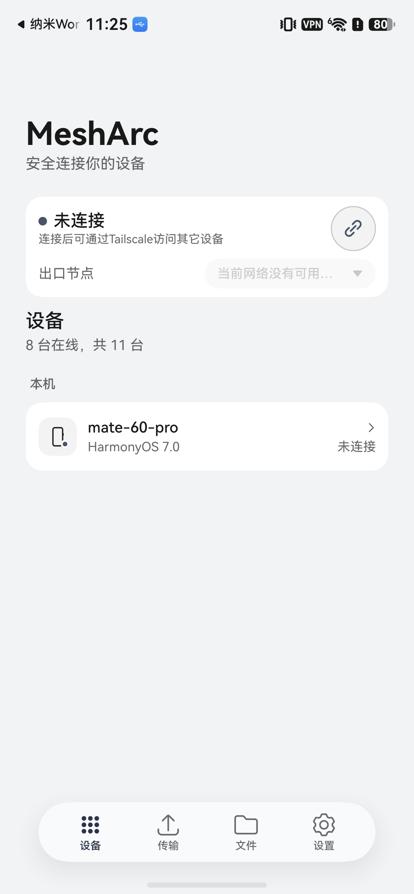
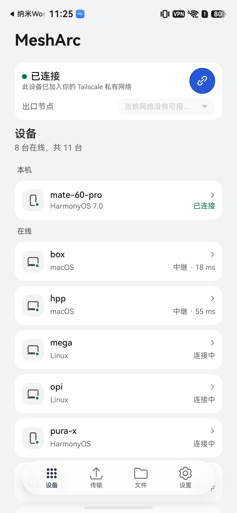

用例
通过BG-CONNECT重连监督：先连上隧道
S1通过冷启动应用
- 操作
- aa force-stop 后 aa start
- 期望
- 设备日志出现 ui_opened
- 界面显示连接状态
- 实际
- 应用冷启动完成，界面显示连接状态

操作后 · e2e-run/shots/01-background-reconnect-launch.png S2通过建立隧道
- 操作
- 界面处于未连接时点击连接按钮
- 期望
- 设备日志出现 vpn_connected
- 监督器记录一轮 connected 采样
- 实际
- 应用已处于已连接状态

结果 · e2e-run/shots/02-background-reconnect-connected.png